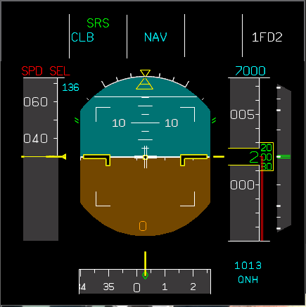

WZZ procs
PREPARATION
Preliminary cockpit preparation
PF/PM GRD 121.9 TWR 118.1 ATIS 123.13
Preliminary cockpit preparation
PF/PM GRD 121.9 TWR 118.1 ATIS 123.13
- overhead panel
- PF: DATA + EFBs + RCL on ECAM + OEBs
- center instr pan
- pedestal
- FMS preparation
- PM check FMS + green dot
- Glareshield: Baro/FDs/ILS/ND mode, range/ EFIS: CSTR/VOR selectors
- Lateral consoles: Oxy, PFD/ND brightness, loudspkr, PFD chck (clmb nav blue..) + LDG ELEV + STS
- Takeoff briefing:
- AIRCRAFT TECHNICAL CHKED; WEATHER; NOTAMS
- RWY long and dry
- FLEX XY/CONF2/PACKS ON/NO ANTIICE
- PUSHBACK facing:
- TAXI ROUTE: VIA T50 P40 P20 P10 to N1
- INITB/PERF/FPL + route dist/RAD/SEC + Abnorm proc
Loadsheet arrives: final data set
PUSHBACK
TAXI
Cleared T/O R32R
TAKEOFF
CLIMB
- PM: FPLN PF: PERF page
- external power off
- grnd cockpit u can disconnect ext pwr
- PF: grnd cockpit, r u ready for pushback?
- PM: grnd WZZ201 at stand E10 ready for pushback and startup
- windows doors closed
- slides armed
- beacon on
- THR lever idle
- ACCU px checked
- NWS disconnected
PUSHBACK
- grnd cockpit clrd for pushback, PB set
- release pb
- PB realised u may commence pushback, starting ENG 2 and 1 in sequence
- PF: Mode sel IGN ENG2, 1
- Mode sel norm
- APU bleed OFF
- ANTIICE as req
- APU OFF
- ECAM STS
- PM:
- SPOILER ARM
- RUD TRIM 0
- FLAPS 1/2 SET
- PITCH TRIM SET CG
- ECAM STS
- pushback completed, set PB PF: u may disconnect
TAXI
- grnd WZZ201 ready to taxi / clrd taxi to N1 VIA ..
- ↑oo-
- PB OFF
- Flight CTRLs check
- PF:
- PFD/ND checked
- T/O briefing confirmed
- Cabin report received
- PM:
- RADAR/PWS ON
- TX AUTO
- TERR ON ND
- AUTO BRK MAX
- T.O. CONFIG press
- cabin ready NO BLUE
Cleared T/O R32R
- PF
- advise cabin crew
- all lights on
- ↑
- ↑↑↑-/↑ (if clred)
- clear left / right
- sliding table up
- RWY confirmed
- T/O checklist
- PM
- TCAS TA/RA
- clear left
- cabin crew takeoff
- ENG mode sel NORM
- sliding table STOWED
- RWY confirmed
- PACKs 1+2 as req
TAKEOFF
- PF: Ready? PM: Ready. PF: Take off
- EPR 1.05 min check dot
- push stick until 80kts
- THRST FLEX/MCT hands off, PM hand on
- PF: MAN FLX, SRS RWY, A/THR
- PM: 100
- PF: check
- PM: V1, Rotate,
- 15 deg, hands off positive climb
- PF: gear up
- PM: gear up
- AP2 on when NAV or RWY TRK comes on
- @THR red alt (1500' radalt): THRST CL @accel alt (3000' radalt): Pitch 12deg
- THR CLB, SPD 250 magenta
- PACKS 1+2 ON (wait 10 sec between)
- @ S speed Flaps 1 / F speed Flaps 0
- accel to climb speed (250kts)
- PM:
- LG UP
- DISARM SPOILER
- ↓ ↑↑ ↓
- APU BLEED OFF
- ANTIICE as req
- APU OFF
- MODE SEL NORM
- TCAS TA/RA
- 1st FL: PF: Set STD, PM: STD set x-checked, passing FL___ now, PF: checked, FL___ blue
CLIMB
- @10000'
- LDG lights RETRACT,
- Seat belt sign OFF
- EFIS ARPT (PF)
- ECAM MEMO no blue
- CLR RADNAV
- COPY ACTIVE
- OPT FL: PROG page
- PF: 1000 to go (ha kimarad PM elmondja), PM: Check
- level off, N1 54%, 2.5deg nose up
- ECAM memo / SD checked
- PROG page: GPS prim, Acc HI
- if LOW: compare BRG/DIST to XYZ with raw data
- if pos err. more than 3NM use raw data/selected guidance if necessary
- FUEL page
- Radar
- Level change
- above: automatic CRZ
- below: set CRZ alt in PROG
- Offset
- LSK at start/OFFSET (LSK2)
- set 5L/R, set start and end point
- DEL: offset/ LSK6R 2x offset delete/INSERT
- New destination
- from point LSK/ new dest: LFBO/ INSERT
DESCEND
- Nav charts/ldg perf
- FMS HAT
- dest: LFBO Arrival 32R/ via AGEN1
- RADNAV check VORs ILS freq/ident/Course/GS
- PROG: GPS prim/acc HI
- PERF: next/next: app: fill
- FUEL check
- sec FPL: copy active
- LDG ELEV (PRESS page) check
- Autobrake LO/HI
- APP briefing
- AC technical
- WX NOTAMs chcked
- FUEL page
- FPLN
- T/D time
- STAR & constraints
- FAF/FAP, GS
- GA / degraded nav case
- PERF
- APPR type decel/early stab: check ND
- Minima: check FMA
- Config
- Vapp
- GA thrst red/acel
- RADNAV
- LDG
- Rwy long and dry, braking act. good
- ldg dist req from EFB
- Autobrake LO/MED, full reverse
- taxi to the right
Transition level
Approach
- Set QNH 1013 /QNH 1013 set xchecked, passing FL_ /checked, ___' blue
- LDG lights ON,
- Seat belt sign ON
- EFIS CONSTR (PF)
- ILS pb ON /IDENT
- ENG START sel NORM
Approach
- in TRK/FPA mode sequence FPL
- DIR to FAP RAD IN (LSK1R) final Course +180
- NAV armed (blue), to disarm pull HDG
- APPR PHASE acticate @ 15NM (track miles FPLN page bottom)
- in managed mode it activates auto @ Ⓓ
- check managed speed
- Cleared for app:
- APPR pb press
- AP2 ON
- LOC*/LOC
- @ GS* set GA alt
- GS
- APP NAV armed
- FINAL blue
- Flaps 1 @ 3miles gps dist (ND right up)
- TCAS TA/RA
- Flaps 2 at 2000' (descending on GS)
- LG down
- AUTO BRAKE LO/HI
- SPOILER ARM
- ↑↑↑-
- Flaps 3, Flaps full
- WING ANTIICE OFF
- SLIDING TABLE STOWED
- Cabin crew prepare for LDG
- Cabin ready, LDG no blue
- A/THR? speed/OFF
- LDG config at FAP
- App spd inserted at FAP/FAF
- vertical revision at FAP, set spd
- (decel point comes earlier in managed mode)
- config 15NM before thld or 5NM before FAP
- if VOR sel/sel: pull V/S 1 NP before FAP set -3deg, 0.3 NM before FAP PULL
- 1000' stabilized
- 500' clrd to land
- hundred above
- minimum/continue
- AP OFF/FDs OFF/BIRD ON, set RWY TRK
- spoilers/reverse green/decel
- @70 rev idle
- @ taxi spd idle
Abnormal procedures
WINDSHEAR
T/O
STALL
LOSS OF BRAKING
TCAS
TA
WINDSHEAR
T/O
- <V1 STOP
- >V1 WINDSHEAR, TOGA
- AP keep on
- follow SRS untill out of WS
- THR red/ACC alt PM calls ATC
- PM calls for wind changes
- monitor spd trend, pitch according
- delay/deivert
- CONF 3
- Vapp max +15kts
- if RED: WINDSHEAR, TOGA
- AP keep on, if not cont manual
- above 22deg pitch FD goes off, below comes back
STALL
- STALL, I HAVE CONTROL
- NOSE DOWN
- WINGS LEVEL
- warning stops: THRST INCREASE SMOOTHLY
- SPD BRKS RETR, check ECAM
- flpath recover
- FLAPS 1 below FL200
LOSS OF BRAKING
- LOSS OF BRAKING
- ANTISKID OFF
- release pedals
- apply brake, max 1000psi
TCAS
TA
- TRAFFIC, TRACFFIC AMBER
- TCAS BLUE
- A/THRST ON
- AP ON if off: I HAVE CONTROL, AP off FDs OFF!
- wait for RA
- TCAS on FMA(when red)
- if AP on follow FDs + VS, if wrong take over
- AP OFF, FDS OFF, VS adjust, fly the green
- WZZ201 TCAS RA
- if AP on follow FDs + VS, if wrong take over
- on final: WZZ201 going around due to TCAS RA
- CLEAR OF CONFLICT
- AP ON, FDs on LAT/VERT + SPD adjust,
ENG FAILURE after V1
ENGINE FAILURE IN CRUISE
STANDARD STRATEGY
1 ENG FAIL APP/GA
EMERGENCY DESCEND
PM
"ECAM ACTIONS" // or and QRH
- Keep center line precisely + Rotate to 12.5* pitch slowly + Keep wings level
- PM Positive climb
- PF Gear up
- PM Engine 1 failed
- consider TOGA
- beta target
- PF Trim by rudder trim 15-18s,
- AP on
- No actions below 400' just monitor flight path
- @ 400' PF I have control, I have communication,
- PM ENG 1 fail confirmed with flame out (ha van EGT?)/damage (ha leállt vagy vibracio) /fire (ha tűzjelzés is van),
the other ENG parameters are OK - PM Performs ECAM (Confirm on ENG MASTER; THR LEV; Guarded SW)
- ENG MODE SEL: IGN
- PF: CONFIRM ENG 1 THR LEVER: IDLE
- PM: ENG MASTER 1 OFF, CONFIRM?
- If damage
- CONFIRM ENG 1 FIRE P/B PUSH
- TCAS TA / 7700
- IF no damage
- delay restart untill before STS page
- Pushes V/S knob to Level Off
- Accelerate and Clean Up the Aircraft
- "MAYDAY x3 WZZ201 ENG FAIL"
- At Green Dot speed: SET ALT and PULL; Thrust MCT form TOGA/or CLB than MCT
- Ask PM to Activate SEC FPLN, set direct to EngineOut FIX and HOLD over
- FUEL X-FEED: CONSIDER
- PM Clear ENG1 FAIL?
- PF Clear ENG1
- secondary failures: AIR BLEED, ELEC-> start APU, HYD, PF considerations
- PM Clear AIR BLEED/ELEC/HYD?
- Any OEB, paper C/L computer reset/ENG relight?
- AFTER T/O CLB C/L
- If no damage: QRH ENG RELIGHT IN FLIGHT
- APU OFF
- + THST lever reset to CLB
- Rudder trim 0
- PM: Read status page, consider APU start (for gen)
- CLR STATUS?
- CLR STATUS
- Decelerated app for OEI
- if vectors, sequence FPL
- @ 50' RUD TRIM 0
- QRH: LDG with eng sys fail PER-G
- not apply, only of overweight (+570m)
- QRH: OEI straight in app 19.12A
- delay CONF 2 (decel app)
- QRH: Overweight LDG 25.07A
- CONF full mostly <83T
- EFB LDG dist + Vapp check and set on MCDU (Vapp+10)
- PACKs can stay ON if APU bleed ON (check bleed page)
- but
- if ENG2 failed, if squib used: X-BLEED SHUT!
- if ENG1 failed if squib used (no x-bleed)
- but
- @ S speed limit is low
- during config set sel spd 5kts below S spd
- @ F SPD managed
ENGINE FAILURE IN CRUISE
- ALL THRST LEVERS MCT
- ATHR OFF (if EF below EO MAX, leave)
- MAYDAY x3 WZZ201 1 ENGINE FAILURE
- DECEL to o
- PERF drift down to FL set and PULL
STANDARD STRATEGY
- SPD .78
- PROG REC MAX FL set and PULL
- ECAM ACTIONS
- when V/S -500 set and PULL V/S
- ATHR ON
- at EO LRC (ALT CRZ) SPD managed
1 ENG FAIL APP/GA
- decelerated app (5NM before FAP flaps1,@2000' flaps 2..)
- after app brief
- QRH: Ldg with Eng sys fail
- LDG @ 50': push rudder trim 0
- GA: TOGA, GA, flaps, 12,5°, LG up, AP ON
- Use rudder for GA!
- @ 2000' (thrst red alt) push V/S
- clean up (FLAPS 3 TO 1), at green dot ALT PULL
- AFTER T/O C/L
EMERGENCY DESCEND
PM
- OXY MASK ON
- "EMERGENCY DESCEND"
- ALT: TURN PULL
- HDG: TURN PULL
- SPD: PULL
- if ATHR off
- THRST IDLE
- SPD BRAKE MAX
- COM: ACP: INT switvh/+INT audio btn SET/PUSH
- PA: "EMERGENCY DESCEND"
- CAB PR EXCESS CAB ALT (or PACKs 1+2 FAIL)
- OXY MASK ON
- ALL SIGNs ON
"ECAM ACTIONS" // or and QRH
- Set final desc alt (MORA if rng40+cnst)
- If no damage
- SPD MMO/VMO
- If damage
- SPD press Mach/spd pb (to maintain SPD mode), reduce spd, consider LG extention
- ATC: "MAYDAY X3 EMERGENCY DESCEND FL_"
ALT*
- SPD BRAKE IN
- SPD MANAGE
DUAL HYD FAILURE G+Y
- ALTN law
- WHEEL
- only spoils 3, no NWS, no AntSkid
- alt brking accu only
- F/CTL
- only roll spoil 3
- THS out
- aileron, rudder, elev good (B only)
- LDG Flap 3 -> GPW LDG FLAP MODE OFF
- CONF 3 AND Vapp
- GRAVITY LG ext. (QRH)
- CRZ (PM)
- LDG DIST PROC...APPLY: PER-I
- G+Y kb 2769m (64.5t)
- Vapp PER-A 5/6
- DELTA Vref >20 (25) so 25
- FUEL PENALITY
- G+Y SYS LO PX 10% no factor
- LDG DIST PROC...APPLY: PER-I
- APP, LDG, GA (PF)
- prep, brief app, brief failure (use STS)
AUTO FLT FCU 1+2 FAULT ECAM
- AP OFF ATHR OFF
- THRST LK: move THRST lever to match thrst pointer
- only SBY alt can be set to QNH, normal reverts to STD
- dont set BARO
- all callouts ref to SBY altimeter
- all FCU controls INOP except in LAND or GA mode
- PFD
- no alt alert
- ILS dev desplayed
- FPV displayed
- no MACH indication
- no FMA exc. LAND and GA
- ND
- rose nav 80
- 1: VOR1 2: ADF1
- no Wx radar
FLIGHT CREW INCAPACITATION
- I HAVE CONTROL
- sidestick pb 40sec keep
- AP on
- MAYDAY x3 crew incapacitation
- PA: Attention, purser to cockplit please
- Early approach prep + C/Ls
- use vectoring
- arrange medical assistance
UNRELIABLE AIRSPEED
QRH 26.02A
EMERG ELEC CONFIG
QRH 26.02A
EMERG ELEC CONFIG
- no screens on right side
- AP, ATHR goes off
- THRST LK: allign THRST levers to the pointer
- PF (IN CM2) to CM1: YOU HAVE CTRL I HAVE COMS, ECAM ACTIONS
- LAND ASAP. secondary failures
- press and hold ELEC page

ELAC page confirms that te aircraft isin EMER CONFIG
- @ PROC: GRAVITY FUEL FEEDING 21.03A
- APU start from BAT below FL250 (FCOM limitations)
ALTN LAW, ATHR offs
SUMMARY
- EFB LDG dist compute
- Insert flaps 3 and GPWS LDG FLAPS 3 PUSH (ON)
- CM2 (PF) prepares and briefs the approach
ALL ENG FLAMEOUT
- ENG/FUEL PROC APPLY: QRH 19.01A
HYD G RSVR LO LVL
Inop sys for ldg
- Ground spoilers 1+5 lost
- Reverser 1 lost
- LG gravity extension, no retract FF higher after GA
AUTO FLT A/THR OFF
- may work with other AP on, but will be lost when APs off (before landing)
REJECTED TAKEOFF
- Captain: STOP!
- IDLE, MAX REVERSE
- reversers stowed
- PB ON
- CM2: WZZ201 STOPPING
- ATTENTION, CREW AT STATIONS!
- ECAM ACTIONS
- to PM: EMERG EVACUATION PROC!
- PM performs EMER EVAC proc
- EVACUATE, EVACUATE (or CABIN CREW AND PASSANGERS REMAIN SEATED)
- EMER EVAC COMMAND PB ON
- PM notifies ATC about EVAC

PF CLB NAV, blue, 1FD2, QNH 1013, ELEV 210, 7000 Blue, speeds 136, 147
- EMERGENCY BRIEFING
(CM2) In case of serious malfunction before V1, you will call "STOP". If you call "STOP", your items are:
(CM1) Thrust lever idle, max reverse, max braking. When we come to complete stop I apply parking brake and announce "ATTENTION CREW! AT STATIONS!" twice. Then I will call "ECAM ACTIONS or PAPER CHECKLIST". Your items are:
(CM2) I monitor and call "REVERSE GREEN (or NO REVERSE...) /DECEL". Below 70 kts and before aircraft comes to a full stop, I will inform ATC: "PILOTS _____ STOPPING". After park brake set and cabin crew advised by you, I perform ECAM ACTIONS or PAPER CHECKLIST on your request. In case of "GO" or any malfunction after V1: nothing will be done below 400 ft, except: silence the warning and gear up at positive climb*. At 400 ft and aircraft is under my control I will call: “I HAVE CONTROL, I HAVE COMMUNICATION, CONFIRM FAILURE”**, and after the failure is confirmed: “ECAM ACTIONS”. Engine out routing is... . At acceleration altitude and engine secured***, whichever is later: "STOP ECAM", "PUSH TO LEVEL OFF", clean up the aircraft on schedule. Once the aircraft is clean, reaching green dot speed: "ALTITUDE PULL, THRUST MCT" and we climb to ...... feet . MSA is ---- feet. -Any questions, suggestions?
- Engine out routing
- MSA: 2300
![*CM1 removes hands from thrust levers at V1. PF must not place hands on thrust levers until 400 except for selection of TOGA thrust. Selection of TOGA thrust must be communicated to PM. ** Confirmation of failure to be assessed by PM with reference to ECAM and local warnings (overhead panel, pedestal etc.) Checking the remaining engine`s parameters is also essential. After PM has checked all the indications, should announce: ENGINE 1(2) FAILURE CONFIRMED WITH .. (flameout/damage/fire), REMAINING ENGINE PARAMETERS ARE OK (or status of it). ***PM must announce as soon as ENGINE SECURED. -Engine secured means: ENGINE FAILURE WITHOUT DAMAGE: T/L IDLE, ENG MASTER OFF. ENGINE FAILURE WITH DAMAGE: T/L IDLE, ENG MASTER OFF, FIRE P/B PUSHED, 1 AGENT DISCHARGED. ENGINE FIRE: T/L IDLE, ENG MASTER OFF, FIRE P/B PUSHED, AGENT 1 (AND 2) DISCHARGED AS REQUIRED.](uploads/1/8/8/8/18889660/text_3.jpg)
PM on PA (public address): Cabin crew, take off
Approach briefing (PF)
During approach, FMGC (MCDU) left in F-PLN, right in PERF mode,
Environment:
Follow the “HAT” pattern on the keys for the arrival briefing:
During approach, FMGC (MCDU) left in F-PLN, right in PERF mode,
Environment:
- AIRCRAFT STATUS, any MEL or DIR items, failures, capability.
- NOTAMS of the airport, taxiway closures, restrictions… (ATIS)
- WEATHER of the departure airport (ATIS)
Follow the “HAT” pattern on the keys for the arrival briefing:

Landing type: normal landing, full flaps, reverse thrust, low autobrake, AP disengage before minimum, Rwy dry
Stopping the A/C: Vacate rwy L/R, taxiway
Stopping the A/C: Vacate rwy L/R, taxiway
PF: Approrach checklist

PM
LANDING
PM deviations
Always read FMA!
ILS
PM deviations
- Heading: +/- 5,
- Speed: +10/-5 knots,
- Altitude: +/- 100 feet,
- Glide slope: +/- ½ dot,
- Localizer: +/- ½ dot,
- Bank >7 degrees,
- V/S >1000`/min on approach,
- Pitch -2.5/+7.5 degrees,
- Course >2.5 degrees for VOR app,
- Course >5 degrees for NDB app.
Always read FMA!
ILS
- APP PHASE (PERF page) ACTIVATE (switches to app phase, green dot spd)
- Base leg: PF: Flaps 1 PM: speed check, flaps 1
- App clrnce received: App mode button ON, ILS knob ON (switches on GS/LOC on PFD) + Turning knob to ILS (PF)?
- PM: LOC alive PF: LOC*, GS
- LOC,GS*, Flaps 2
- just before descend point: PF: Gears Down PM: Gears down, spoilers ARM, lights?
- start descend, PM set G/A alt
- PF: Flaps 3 PM: speed check, flaps 3
- PF: Flaps FULL PM: speed check, flaps FULL
- PM: 1000' (AGL, by BARO!) stabilized, PF: checked
- PM: 500 cleared to land
- @ minimums: 2 clicks on stick (red bttn) AP OFF PF: AP OFF
- GPWS: 100, 60, 40, 20 retard: flare.. directional control!
- Max reverse thrust, @ 70 kts reverse idle
- PM: spoilers, reverse green, decel... at 70 call 70, idle reverse, manual brakes.!
VOR
...
...
GO AROUND
- PF: Go around, Flaps!
- TOGA, pitch 15 deg
- PM: flaps present - 1 (up)
- READ FMA!
- PM: + climb
- PF: Gears up, AP ON, NAV push
- @ THRST red/acc alt: Retract flaps on schedule
- THRST lever: CL
AFTER LANDING
- RWY vacated:
- PF:
- Disarm spoiler
- PM:
- External lights OFF, only TAXI stays ON
- Flaps zero
- TCAS STBY
- APU start
- PF: AFTER LDG CHECKLIST silent!
AFTER PARKING
PM:
PM:
- TX STBY SQ 1000/2000
- Engines OFF
- Seat belt sign OFF
- Beacon OFF (below 10% N1)

FAULTS:
- Y HYD RSV OVHT. ECAM, DODAR
- TCAS RA
- PF/PM PROXIMITY TRAFFIC
- PF: TCAS I HAVE CONTROLS
- PF: AP off, FD's OFF!
- PM TCAS RA (to atc)
- PM Clear of conflcit (to atc)
- PF: FD's on AP on, select mode to capture alt
- After passing half track distance, rapid decompression
- PF: OXIGEN MASK ON COMM ESTABLISH on mask
- PM: OXIGEN MASK ON COMM ESTABILISH on mask
- PM signs on
- Emergency descend initiate
- ALT: TURN PULL
- HDG: TURN PULL
- SPD: PULL
- Read FMA
- speed brake full
- Refine alt,spd,hdg (MORA, IAS/VMO)
- PM: PASSENGER OXIGEN ON (above 14000 ft cabin alt)
- PF: ECAM ACTIONS
- After completing the rapid descent procedure, insert AC BUS 1 Fault (Continue to destination)
- PM I have ctrs, I have comms, Confirm failure
- PM Failure confirmed, ECAM actions
- Windshear on approach, Windshear-TOGA Go-Around
- Divert to LIME ILS X 28
- ENF FAIL after V1
- Keep center line precisely + Rotate to 12.5* pitch slowly + Keep wings level
- PM Positive climb
- PF Gear up
- PM Engine 1 failed
- PF Pull HDG
- PM pulls HDG
- PF Trim by rudder trim, AP on
- No actions below 400' just monitor flight path
- @ 400' PF I have control, I have communication, confirm failure
- PM ENG 1 fail confirmed with flame out (ha van EGT?)/damage (ha leállt vagy vibracio) /fire (ha túzjelzés is van),
the other ENG parameters are OK- PF ECAM ACTIONS and report MAYDAY on radio
- PM Performs ECAM (Confirm on ENG MASTER; TL; Guarded SW)
- Master caution off
- ENG MODE SEL: IGN
- CONFIRM ENG 1 THR LEVER: IDLE
- if no relight
- ENG MASTER 1: OFF
- If damage
- ENG 1 FIRE PUSH P/B PUSH
- PF STOP ECAM @ THRST RED/ACC alt
- Pushes V/S knob to Level Off
- Accelerate and Clean Up the Aircraft
- At Green Dot speed: SET ALT and PULL; Thrust MCT
- Ask PM to Activate SEC FPLN, set direct to EngineOut FIX and HOLD over
- Continue ECAM Actions
- FUEL X-FEED: CONSIDER
- PM Clear ENG1?
- PF Clear ENG1
- secondary failures: AIR BLEED, ELEC, HYD, PF considerations
- PM Clear AIR BLEED/ELEC/HYD?
- PM: Read status page than CLR STATUS?
- CLR STATUS